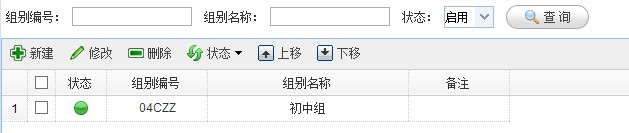
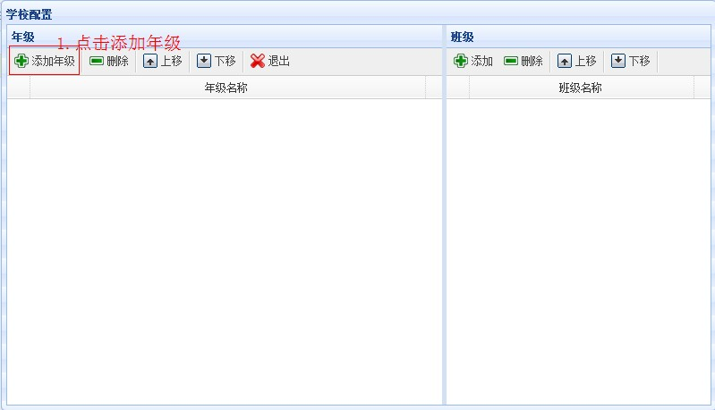
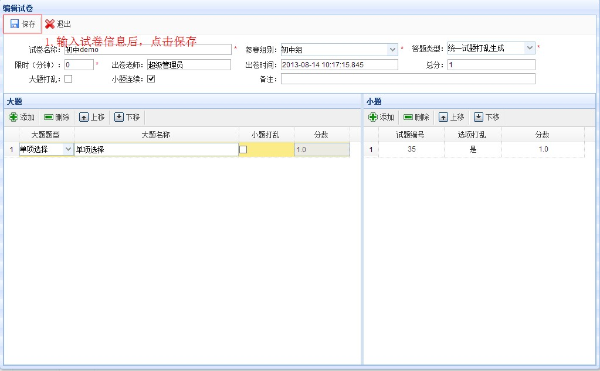

本节将指引您快速创建第一个赛事，开始使用ecms!
详细步骤如下：
Step1. 登录ecms系统后台，用户名为admin，默认密码为123456
登录成功后如下图：
Step2. 点击“系统管理”，在展开的菜单中点击“系统配置”，并填写“公司信息配置”
Step3. 下面为赛事添加些基础信息，基础信息在各个赛事中可重复使用，点击“基础字典”，在展开的菜单中点击“参赛组别”，点击添加一个参赛组别（初中组）
添加成功后如下图：

Step4. 点击“基础字典”，在展开的菜单中点击“奖项”，点击添加一个奖项（冠军）
添加成功后如下图：
Step5. 点击“基础字典”，在展开的菜单中点击“年级”，点击添加一个年级（初一）
添加成功后如下图：
Step6. 点击“基础字典”，在展开的菜单中点击“班级”，点击添加一个班级（（1）班）
添加成功后如下图：

Step7. 点击“基础字典”，在展开的菜单中点击“学校维护”，点击添加一个学校（学校Demo）并为学校配置年级（初一）和班级（（1）班）

Step8. 下面为赛事准备一份试卷。 点击“考试管理”，在展开的菜单中点击“试题管理”，进入试题管理界面，默认进入单项选择题界面
点击新建，输入试题信息
点击保存
Step9. 点击“考试管理”，在展开的菜单中点击“试卷管理”，进入“试卷管理”界面，点击新建，在新建菜单中选择“新建”，输入试卷信息

点击保存后，点击退出，选择查询区的状态为禁用，单击查询，可查到刚新建出来的试卷（初中demo），选中试卷，将试卷状态改为启用状态
单击选中试卷，可点击“查看试卷”，可浏览到整张试卷组卷后的情况
单击选中试卷，可点击“查看学生端试卷”，可浏览到学生答题时的大体情况
Step10. 现在我们可以创建赛事了。 点击“赛事管理”，在展开的菜单中点击“赛事管理”，进入赛事管理界面。在“新建”下拉菜单中选择“新建”按钮
点击保存，可查看新建的赛事
Step11. 对新建的赛事进行赛事配置。 点击赛事管理界面中的“赛事配置”按钮，进入赛事配置。
为赛事配置参赛组别
为赛事组别配置试卷

Step12. 为了前台用户（学生）浏览赛事，还需要为赛事配置赛事资讯。 点击“资讯管理”，在展开的菜单中点击“资讯”，进入“资讯”界面。点击“新建”按钮，进入资讯编辑界面
先为赛事配置一个大赛章程
再为赛事配置一个赛事公告
Step13. 为赛事配置赛事风采。 点击“资讯管理”，在展开的菜单中点击“资讯”，进入“赛事风采”界面。点击“批量新建”按钮，进入赛事风采编辑界面
先为赛事上传主持人风采
第一个赛事已完成配置，你可以登录到系统前台查看配置后的赛事展示了
赛事主界面
大赛章程
赛事公告
赛事风采
Step14. 假设学校Demo初一（1）班的学生studemo要参加demo赛事，系统的流程是：
注册系统

报名赛事
管理员审核报名
学生在线考试

管理员录入赛事晋级情况
学生查看赛事晋级情况
赛事获奖名单与赛事晋级类似， 至此你创建了第一个赛事，了解了系统的主要流程